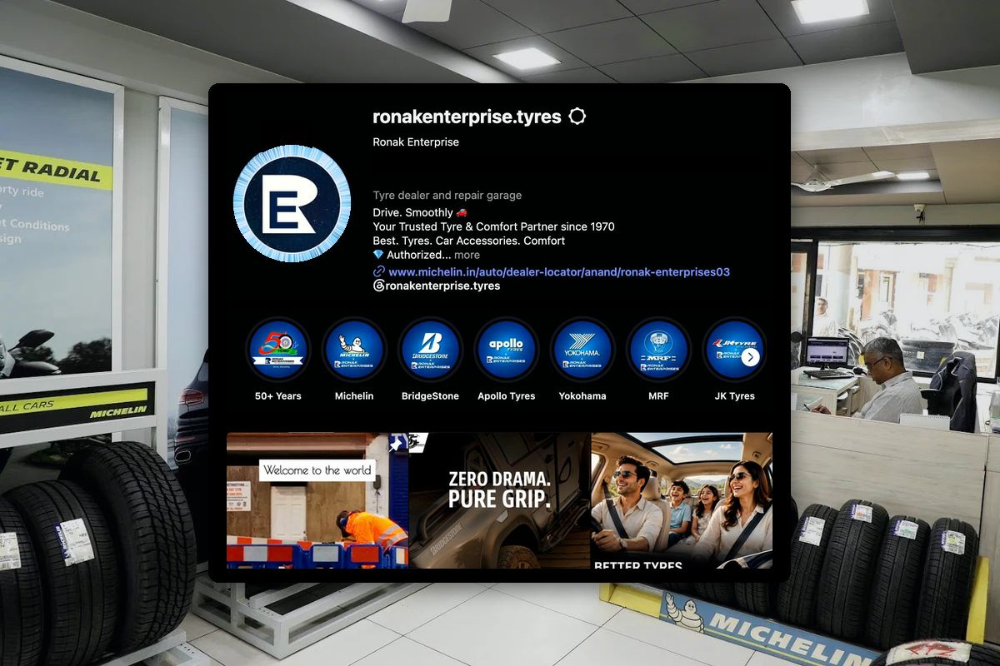

Practical exposure
Ronak Enterprises, Anand
The Digitalisation and Social Media Management of our family business I grew up around, being the tyre partner and comfort partner by Serving Charotar for 55+ years.

Open the story
The context
A traditional tyre and car-service business, built on relationships with customers. This is my family business, not a company I founded.
My involvement
Exposure to customer engagement, retention, digital marketing and everyday business operations.
The question
How does an established business maintain customer relationships while considering digital tools?
What this entry shows
Practical business exposure. It does not claim a measured sales increase, a deployed CRM system or an independently run business.